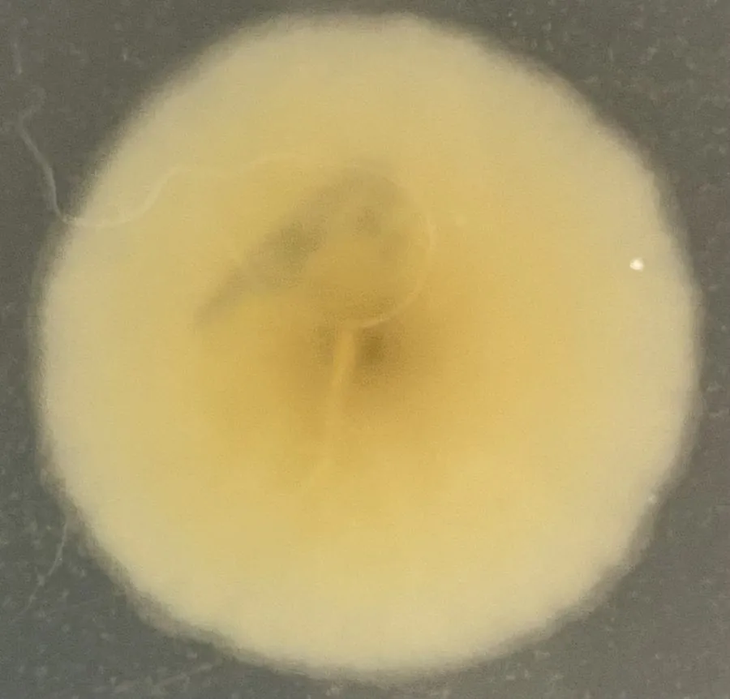

真菌 · 真菌界
总状毛霉 Mucor racemosus

总状毛霉的菌丝呈灰白色棉絮状，孢子囊球形、成熟后呈灰褐色，是豆制品发酵和常见食品腐败的霉菌。
- 分类
- 门毛霉门纲毛霉纲目毛霉目科毛霉科属毛霉属
- 栖息环境
- 土壤、空气、粮食与腐败食物，温暖潮湿处常见
- 地理分布
- 世界性分布，各地均有
- 保护级别
- 暂无评估（工业微生物）
物种志
总状毛霉是毛霉门毛霉科的真菌，菌丝无隔或极少隔膜，生长迅速，呈灰白色或黄白色棉絮状。孢子囊梗从菌丝上直立伸出，分枝呈总状，顶端各生一个球形孢子囊，幼时白色或黄色，成熟后呈灰褐色或褐色，囊内充满孢子。它没有匍匐菌丝和假根，与根霉不同。
总状毛霉广泛分布于土壤、空气、粮食和腐败食物上，是常见的污染霉菌，会使面包、水果、蔬菜等发霉变质。在发酵食品中，总状毛霉也参与豆腐乳、豆豉等豆制品的发酵，能产生蛋白酶分解大豆蛋白，赋予产品特殊风味。此外，毛霉还能用于生产淀粉酶、脂肪酶等酶制剂。对免疫力低下的人群，部分毛霉可能引起感染，因此食品霉变后不应食用。
形态与习性
- 菌丝无隔或极少隔膜，灰白色棉絮状
- 孢子囊梗分枝呈总状
- 孢子囊球形，成熟后灰褐色
- 发酵参与腐乳、豆豉发酵
- 用途生产淀粉酶、脂肪酶
- 危害使食品霉变，免疫力低下者需注意
趣味知识
- 总状毛霉的孢子囊梗像总状花序一样分枝，名字由此而来。
- 它和根霉外形相似，但没有匍匐菌丝和假根。
- 总状毛霉参与腐乳和豆豉的发酵，也会让食物发霉变质。